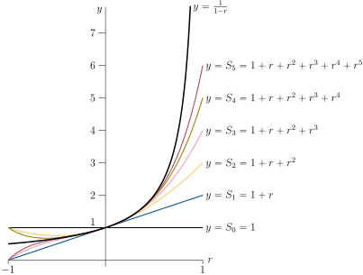

Example 3.2.4. Geometric Series.
Let \(a\) and \(r\) be any two fixed real numbers with \(a\ne 0\text{.}\) The series
\begin{equation*}
a + ar + ar^2 + \cdots + ar^n + \cdots = \sum_{n=0}^\infty ar^n
\end{equation*}
is called the geometric series with first term \(a\) and ratio \(r\text{.}\)
Notice that we have chosen to start the summation index at \(n=0\text{.}\) That’s fine. The first term is the \(n=0\) term, which is \(ar^0=a\text{.}\) The second term is the \(n=1\) term, which is \(ar^1=ar\text{.}\) And so on. We could have also written the series \(\sum_{n=1}^\infty ar^{n-1}\text{.}\) That’s exactly the same series — the first term is \(ar^{n-1}\big|_{n=1}=ar^{1-1}=a\text{,}\) the second term is \(ar^{n-1}\big|_{n=2}=ar^{2-1}=ar\text{,}\) and so on . Regardless of how we write the geometric series, \(a\) is the first term and \(r\) is the ratio between successive terms.
2
It is actually quite common in computer science to think of \(0\) as the first integer. In that context, the set of natural numbers is defined to contain \(0\text{:}\) \(\mathbb{N} = \left\{0,1,2,\cdots \right\}\) while the notation \(\mathbb{Z}^+ = \left\{1,2,3,\cdots \right\}\) is used to denote the (strictly) positive integers. Remember that in this text, as is more standard in mathematics, we define the set of natural numbers to be the set of (strictly) positive integers.
3
This reminds the authors of the paradox of Hilbert’s hotel. The hotel with an infinite number of rooms is completely full, but can always accommodate one more guest. The interested reader should use their favourite search engine to find more information on this.
Geometric series have the extremely useful property that there is a very simple formula for their partial sums. Denote the partial sum by
\begin{align*}
S_N &= \sum_{n=0}^Nar^n = a + ar + ar^2 + \cdots + ar^N.\\
\end{align*}
The secret to evaluating this sum is to see what happens when we multiply it by \(r\text{:}\)
\begin{align*}
rS_N &= r\big(a + ar + ar^2 + \cdots + ar^N\big)\\
& = ar + ar^2 + ar^3 + \cdots + ar^{N+1}
\end{align*}
Notice that this is almost the same as \(S_N\text{.}\) The only differences are that the first term, \(a\text{,}\) is missing and one additional term, \(ar^{N+1}\text{,}\) has been tacked on the end. So
4
One can find similar properties of other special series, that allow us, with some work, to cancel many terms in the partial sums. We will shortly see a good example of this. The interested reader should look up “creative telescoping” to see how this idea might be used more generally, though it is somewhat beyond this course.
\begin{align*}
S_N &= a + ar + ar^2 + \cdots + ar^N\\
r S_N &= \phantom{ar +} ar + ar^2 + \cdots + ar^N + ar^{N+1}\\
\end{align*}
Hence taking the difference of these expressions cancels almost all the terms:
\begin{align*}
(1-r) S_N &= a - ar ^{N+1} = a (1-r^{N+1})\\
\end{align*}
Provided \(r\neq 1\) we can divide both side by \(1-r\) to isolate \(S_N\text{:}\)
\begin{align*}
S_N &= a \cdot \frac{1-r^{N+1}}{1-r}.
\end{align*}
On the other hand, if \(r=1\text{,}\) then
\begin{align*}
S_N &= \underbrace{a + a +\cdots + a}_{N+1 \text{ terms}} = a (N+1)
\end{align*}
So in summary:
\begin{equation*}
S_N = \begin{cases}
a\frac{1-r^{N+1}}{1-r} & \text{if $r\ne 1$} \\
a(N+1) & \text{if $r=1$}
\end{cases}
\end{equation*}
Now that we have this expression we can determine whether or not the series converges. If \(|r| \lt 1\text{,}\) then \(r^{N+1}\) tends to zero as \(N\rightarrow\infty\text{,}\) so that \(S_N\) converges to \(\frac{a}{1-r}\) as \(N\rightarrow\infty\) and
\begin{equation*}
\sum_{n=0}^\infty ar^n = \frac{a}{1-r}
\text{provided $|r| \lt 1$}.
\end{equation*}
On the other hand if \(|r|\ge 1\text{,}\) \(S_N\) diverges. To understand this divergence, consider the following 4 cases:
-
If \(r \gt 1\text{,}\) then \(r^N\) grows to \(\infty\) as \(N\rightarrow\infty\text{.}\)
-
If \(r \lt -1\text{,}\) then the magnitude of \(r^N\) grows to \(\infty\text{,}\) and the sign of \(r^N\) oscillates between \(+\) and \(-\text{,}\) as \(N\rightarrow\infty\text{.}\)
-
If \(r=+1\text{,}\) then \(N+1\) grows to \(\infty\) as \(N\rightarrow\infty\text{.}\)
-
If \(r=-1\text{,}\) then \(r^N\) just oscillates between \(+1\) and \(-1\) as \(N\rightarrow\infty\text{.}\)
In each case the sequence of partial sums does not converge and so the series does not converge.
Here are some sketches of the graphs of \(\frac{1}{1-r}\) and \(S_N\text{,}\) \(0\le N\le 5\text{,}\) for \(a=1\) and \(-1\le r\lt 1\text{.}\)

In these sketches we see that
-
when \(0\lt r \lt 1\text{,}\) and also when \(-1\lt r\lt 0\) with \(N\) odd, we have \(S_N=\frac{1-r^{N+1}}{1-r}\lt \frac{1}{1-r}\text{.}\) On the other hand, when \(-1\lt r\lt 0\) with \(N\) even, we have \(S_N=\frac{1-r^{N+1}}{1-r}\gt \frac{1}{1-r}\text{.}\)
-
When \(0\lt |r|\lt 1\text{,}\) \(S_N=\frac{1-r^{N+1}}{1-r}\) gets closer and closer to \(\frac{1}{1-r}\) as \(N\) increases.
-
When \(r=-1\text{,}\) \(S_N\) just alternates between \(0\text{,}\) when \(N\) is odd, and \(1\text{,}\) when \(N\) is even.